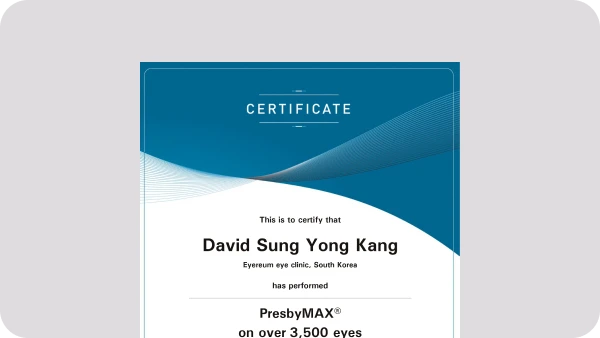
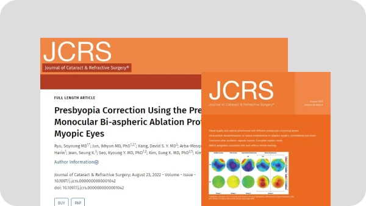
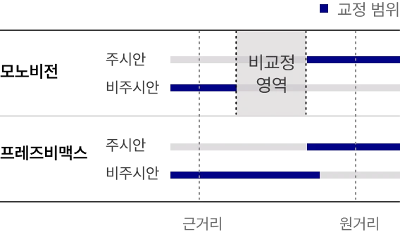
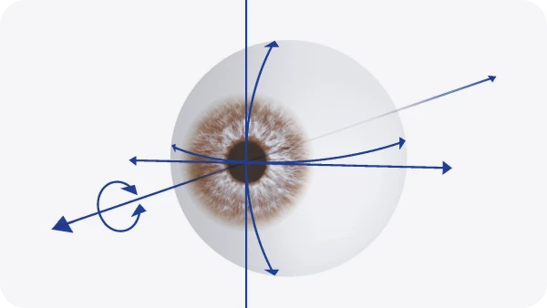
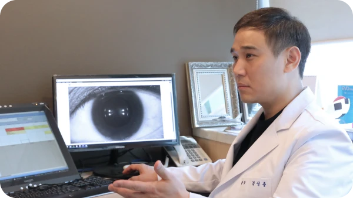
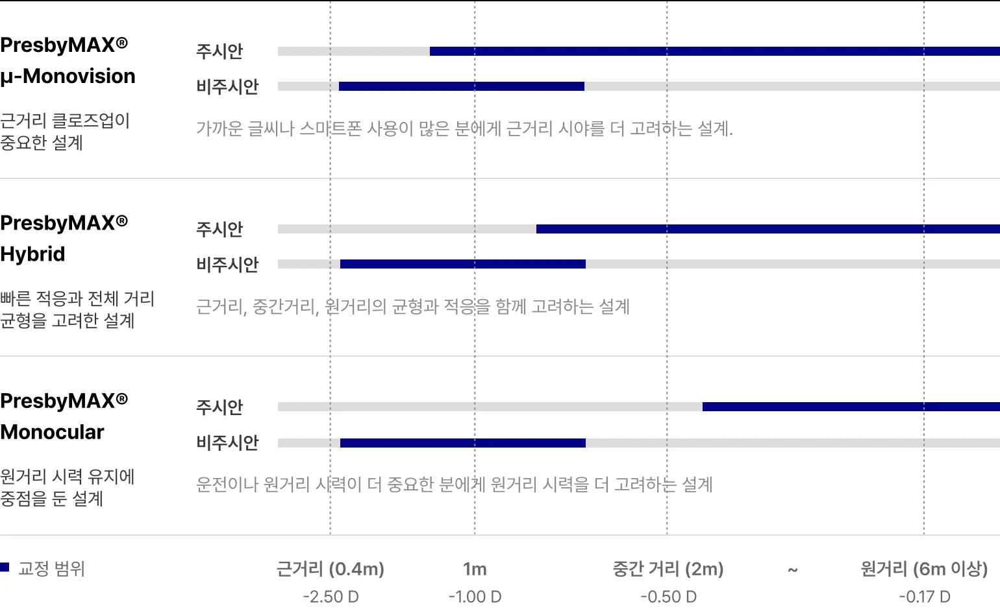
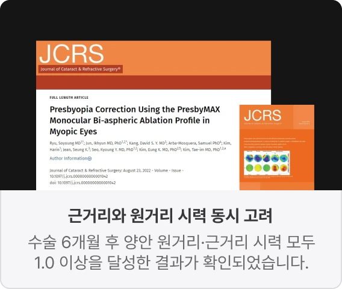
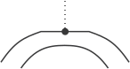

-
근·중·원거리 맞춤 설계
-
 SCI 논문기반
SCI 논문기반
아이리움 PresbyMAX®
주요 성과
-

프레즈비맥스 3,500안 수술 (2024년 기준), 강성용 대표원장 2018년 국내 첫 시행 -

프레즈비맥스 노안라식 수술결과, SCI 논문 JCRS(백내장굴절수술학술지) 등재 -
아이리움안과 프레즈비맥스 노안라식 임상 결과 ESCRS(유럽백내장굴절 수술학회) 4년 연속 채택 및 발표
-
아이리움안과 프레즈비맥스 노안라식 임상 결과 국제 학회·해외 의료진 교육 및 국내외 학회 초청강연
-
노안, 가까운 거리가 흐려지는 이유
노안은 나이가 들면서 눈의 초점 조절 능력이 떨어져 가까운 글씨나 스마트폰 화면이 흐려지는 현상입니다. 처음에는 팔을 뻗어야 잘 보이거나, 어두운 곳에서 작은 글씨가 더 불편해지는 식으로 시작됩니다.
노안 증상- 스마트폰 글씨가 가까이서 흐려짐
- 책·서류를 멀리 두고 보게 됨
- 컴퓨터 작업 후 눈 피로 증가 어두운 곳에서 작은 글씨가 더 불편
- 돋보기 의존도가 점점 높아짐
-
PresbyMAX®란?
프레즈비맥스, 각막에 초점 범위를 설계하는 노안교정술PresbyMAX®는 각막을 정밀하게 레이저로 모델링하는 방식의 노안교정술입니다. 근거리와 원거리 시야를 함께 개선하고자 하는 환자의 눈 상태와 생활 시거리에 따라 다양한 맞춤 설계가 가능합니다.
생활 시야 3가지
아이리움안과의 프레즈비맥스 노안교정은 돋보기 하나를 눈 안에 넣는 개념이 아닙니다. 가까운거리, 중간거리, 먼 거리 중 어떤 시야가 더 중요한지에 따라 눈에 맞는 초점 범위를 설계하는 과정입니다.-
근거리 : 스마트폰, 책, 서류 확인
가까운 글씨가 흐려지고 눈에서 멀리 떨어뜨려야 보이는 불편을 확인합니다. -
중간거리 : 컴퓨터, 태블릿, 실내 업무
직업과 업무 환경에서 자주 사용하는 거리를 함께 확인합니다. -
원거리 : 운전, 간판, 야외 활동
원거리 시야 요구가 높은지, 야간 운전 여부 등을 상담합니다.
-
-
-

PresbyMAX® 맞춤 설계
Bespoke PresbyMAX® Design
-
중심 시야 설계
가까운 거리와 먼 거리 중 어떤 시야가 더 중요한지 확인합니다. -
주시안·비주시안 분석

주로 보는 눈과 보조하는 눈의 역할을 나누어 설계합니다. -
생활 시거리 반영

스마트폰, PC, 운전, 직업 환경을
고려합니다. -
각막 및 안구 전체 정밀 분석
 각막두께와 각막 지형, 강성도,
각막두께와 각막 지형, 강성도,
고위수차 등을 확인합니다.
환자 눈에 따라 달라지는
노안교정 설계
PresbyMAX® 설계 예시입니다. 환자의 생활 시거리와 양안 역할에 따라 노안교정 방식은 달라질 수 있습니다.
왼쪽으로 스와이프

-

논문으로 입증한 아이리움 PresbyMAX® 노안교정술
아이리움안과는 연세대 의대와 공동으로 근시안에서 단안 PresbyMAX® 이중구면 절제 프로파일을 이용한 노안교정 결과를 안과학 분야국제 SCI 학술지 JCRS에 발표했습니다.
아이리움의 프레즈비맥스 노안교정은 단순히 가까운 글씨만 잘 보이게 하는 수술이 아닙니다. 원거리와 근거리, 양쪽 눈의 역할까지 고려해 설계한 결과를 SCI 논문으로 입증했습니다.- 혼합시력 설계
- 근시성 노안에 비주시안에는 PresbyMAX®로 근거리 시력 개선, 주시안에는 원거리 시력 향상을 위한 단초점 라식/SMILE 계열 설계를 결합합니다.
- 원근거리 1.0 이상
- 수술 6개월 후 양안 원거리·근거리 모두 1.0 이상 결과를 보고했습니다.
- 원근거리 1.0 이상
- 수술 6개월 후 양안 원거리·근거리 모두 1.0 이상 결과를 보고했습니다.
PresbyMAX®,
이런 분들께서 고려합니다.
-
노안과 근시·난시를 함께
교정하고 싶은 분 -
돋보기 없이 가까운 글씨를
보고 싶은 분 -

백내장 등 질환이 없고 각막레이저
수술이 가능한 분 -
수정체를 보존하는 노안교정을
원하는 분
PresbyMAX® FAQ
프레즈비맥스 수술 전, 가장 많이 묻는 질문
-
Q
PresbyMAX® 노안라식은 어떤 수술인가요?
-
Q
PresbyMAX® 노안라식은 어떤 수술인가요?
-
Q
노안라식과 노안백내장 수술은 어떻게 다른가요?
-
Q
노안라식과 노안백내장 수술은 어떻게 다른가요?
-
Q
드림렌즈 주의사항은 무엇인가요?